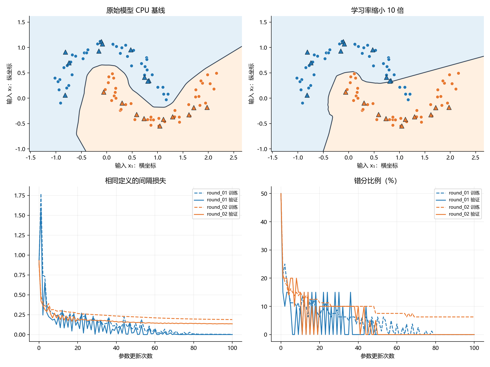

项目与实践
智能体决策、数据分析与模仿学习的项目记录。开发与分析过程中使用 AI 辅助工具。
机器学习 · PyTorch / 可观察状态 / 比赛级数据划分
基于公开回放的模仿学习原型
探索能否仅凭对局中可观察的信息学习强队行动，同时避免训练集与验证集泄漏。
离线验证：第二版特征下，完整动作 Top-1 准确率为 68.95%，同一候选集上的线性基线为 47.34%。验证集候选动作覆盖 35,177 / 35,181 次决策。
查看方法、个人贡献与评估边界
- 方法
- 选取 Sponge 队伍的 Default Small 回放，按独立比赛冻结 115 / 25 / 25 场训练、验证和封存测试集；重建每条龙行动时可见的状态，以与 C++ 推理端一致的候选动作生成器构造数据，用 PyTorch 训练带记忆的候选动作评分模型。训练数据排除了 STAR 队伍。
- 个人贡献
- 负责数据来源与版本锁定、比赛级划分、可观察特征和候选动作设计，并建立模型与线性基线的离线评估流程。
- 认识与局限
- 离线动作预测准确率不等于实战胜率。历史裁判规则版本仍未完全核实，封存测试集未用于模型选择；该模型属于研究原型，尚不能作为已验证的线上 bot 成绩。
智能体与算法 · C++20 / WebAssembly 裁判 · 2026.09 版本
UNSW Battlecode 智能体 qu
在多种地图和对手策略下，设计能稳定存活、获取资源，并尽可能保住终局最长龙的对战 bot。
2026 年 9 月的一版 qu，在当时 10 张线上地图上与内部基线 R2 进行 100 场换边沙箱对战，取得 81 胜、12 负、7 平。
另一次 Big Empty 练习图自对弈打满 500 轮，最长龙达到 143 节。上述结果分别来自内部基线对战与练习图自对弈。
查看方法、个人贡献与评估边界
- 方法
- 基于 C++20 和官方 WebAssembly 裁判，将地图与身体记忆、声纳通信、导航、资源获取、分裂、战斗等模块整合为加权行动决策；执行前使用身体运动模拟与安全检查过滤高风险动作。
- 个人贡献
- 负责整合行动模块、设计评分权重与安全门槛，通过固定种子、交换先后位置的对战实验分析地图差异，并依据回放迭代分裂与碰撞决策。
- 认识与局限
- 多模块评分能兼顾资源收益与即时生存，但权重仍以工程经验为主。面对更强的 Default Small V2.4，对同一组种子的改进版本仅取得 1 / 10 胜，说明局部策略改进尚不能保证跨对手表现。对局回放可在本地对战台逐轮查看。
数据分析与工具 · Python / Parquet / 交互式可视化
比赛回放分析与可视化工具链
针对公开对局数量多、地图差异明显的问题，从回放中分析资源、分裂和存活策略，辅助 bot 的测试与评估。
将 148 份原始回放去重为 144 场独立对局。在该研究样本中，75 场打满 500 轮，其中 74 场由最长龙直接决定胜负。
查看方法、个人贡献与统计范围
- 方法与工具
- 建立比赛数据采集、回放解析、哈希去重与 Parquet 索引流程，按地图统计开局分裂、声纳、拾珠、存活龙和终局长度；开发交互式地图图鉴与可逐轮播放的本地对战台。地图图鉴覆盖当时启用的 10 张线上地图，支持查看资源生成范围与传送门配对。
- 个人贡献
- 负责确定采样和去重口径、实现统计与可视化流程，并将回放观察转化为 bot 的测试方向与评估指标。
- 认识与局限
- 资源领先需要转化为存活的龙身长度，才能提高终局得分。公开回放无法展示对手的内部记忆和决策原因，且研究样本偏重当时的强队，统计结果不能直接外推为全赛季规律。
基础学习实验
通过小规模、可对照的实验理解神经网络的训练过程。
学习实验 · 2026.10 · Python / NumPy / micrograd
micrograd：神经网络训练对照实验
基于 Karpathy 的 micrograd 月牙分类演示，完成 5 轮实验，观察学习率、训练时长与学习率调度对训练过程的影响。
- 固定模型、数据划分与随机种子，比较损失曲线、错分样本和分类边界。
- 通过学习率缩小、继续训练和先大后小的学习率安排，检验自己的预测。
- 记录支持与未支持原假设的结果：曲线更平稳、损失更低，都不一定意味着错分数更少。
我的参与：提出实验问题与预测，选择对照方向，结合图表讨论结果并决定下一步。代码、实验脚本与可视化由 AI 辅助实现。
查看实验设置、结果与图表
实验设置：100 个合成月牙样本，固定拆分为 80 个训练样本、20 个验证样本；网络为 2 → 16 → 16 → 1，共 337 个参数，在 CPU 上运行。
5 轮实验最终训练与验证错分数
| 实验 | 累计更新 | 训练错分 | 验证错分 |
|---|
| 原始学习率基线 | 100 | 0 / 80 | 0 / 20 |
|---|
| 学习率缩小 10 倍 | 100 | 5 / 80 | 0 / 20 |
|---|
| 小学习率继续训练 | 200 | 5 / 80 | 0 / 20 |
|---|
| 先大后小的学习率 | 200 | 5 / 80 | 0 / 20 |
|---|
| 上述学习率整体放大 3 倍 | 200 | 5 / 80 | 0 / 20 |
|---|
第 3–5 轮均从第 2 轮第 100 次更新的同一个模型继续训练。第 3 轮使用固定学习率；第 4 轮改为先大后小，并保持与第 3 轮相同的平均学习率；第 5 轮将第 4 轮的学习率整体放大 3 倍。

第 1、2 轮对照：学习率缩小后曲线更平稳，但相同更新次数下仍有 5 个训练样本错分。点击图片可查看大图。
比较范围：同一份小样本数据、同一划分与随机种子。验证集在多轮讨论中被反复查看，未作为独立最终测试集；这些结果用于理解训练现象，不代表大样本或实际业务性能。